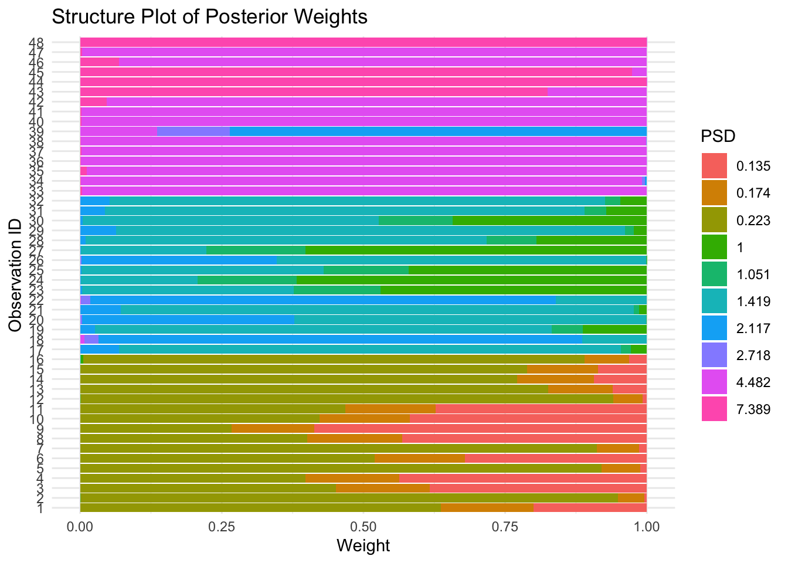
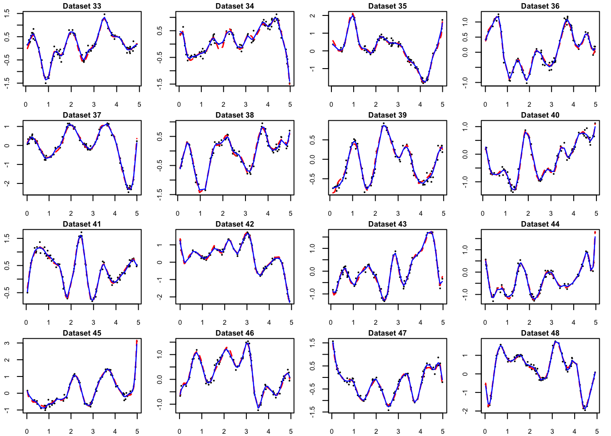

Last updated: 2024-09-05
Checks: 6 1
Knit directory: FASHresultsummary/
This reproducible R Markdown analysis was created with workflowr (version 1.7.1). The Checks tab describes the reproducibility checks that were applied when the results were created. The Past versions tab lists the development history.
The R Markdown file has unstaged changes. To know which version of
the R Markdown file created these results, you’ll want to first commit
it to the Git repo. If you’re still working on the analysis, you can
ignore this warning. When you’re finished, you can run
wflow_publish to commit the R Markdown file and build the
HTML.
Great job! The global environment was empty. Objects defined in the global environment can affect the analysis in your R Markdown file in unknown ways. For reproduciblity it’s best to always run the code in an empty environment.
The command set.seed(20240507) was run prior to running
the code in the R Markdown file. Setting a seed ensures that any results
that rely on randomness, e.g. subsampling or permutations, are
reproducible.
Great job! Recording the operating system, R version, and package versions is critical for reproducibility.
Nice! There were no cached chunks for this analysis, so you can be confident that you successfully produced the results during this run.
Great job! Using relative paths to the files within your workflowr project makes it easier to run your code on other machines.
Great! You are using Git for version control. Tracking code development and connecting the code version to the results is critical for reproducibility.
The results in this page were generated with repository version b729c3f. See the Past versions tab to see a history of the changes made to the R Markdown and HTML files.
Note that you need to be careful to ensure that all relevant files for
the analysis have been committed to Git prior to generating the results
(you can use wflow_publish or
wflow_git_commit). workflowr only checks the R Markdown
file, but you know if there are other scripts or data files that it
depends on. Below is the status of the Git repository when the results
were generated:
Ignored files:
Ignored: .DS_Store
Ignored: .Rhistory
Ignored: .Rproj.user/
Ignored: analysis/.DS_Store
Ignored: analysis/.Rhistory
Ignored: code/.DS_Store
Ignored: code/cpp/.DS_Store
Ignored: code/function/.DS_Store
Ignored: code/function/.Rhistory
Ignored: data/.DS_Store
Ignored: output/.DS_Store
Ignored: output/example/.DS_Store
Ignored: output/example/figure/
Untracked files:
Untracked: analysis/circadian_expression.Rmd
Untracked: code/cpp/Gaussian_just_fixed.o
Untracked: code/cpp/Gaussian_just_fixed.so
Untracked: code/cpp/Gaussian_theta_known.o
Untracked: code/cpp/Gaussian_theta_known.so
Untracked: code/cpp/Poisson.o
Untracked: code/cpp/Poisson.so
Untracked: code/cpp/Poisson_causes.o
Untracked: code/cpp/Poisson_causes.so
Untracked: code/cpp/Poisson_covid.o
Untracked: code/cpp/Poisson_covid.so
Untracked: code/cpp/Poisson_expression.o
Untracked: code/cpp/Poisson_expression.so
Untracked: code/cpp/Poisson_just_fixed.cpp
Untracked: code/cpp/Poisson_just_fixed.o
Untracked: code/cpp/Poisson_just_fixed.so
Untracked: code/cpp/Poisson_just_fixed_causes.o
Untracked: code/cpp/Poisson_just_fixed_causes.so
Untracked: code/cpp/Poisson_just_fixed_covid.o
Untracked: code/cpp/Poisson_just_fixed_covid.so
Untracked: code/cpp/Poisson_just_fixed_expression.o
Untracked: code/cpp/Poisson_just_fixed_expression.so
Untracked: code/function/functions_fitting_Gaussian_eQTL_irregular.R
Untracked: code/function/functions_fitting_Poisson_circadian_expression.R
Untracked: code/function/functions_simulation_eQTL_irregular.R
Untracked: data/13100810.csv
Untracked: data/13100810_MetaData.csv
Untracked: data/circadian_expression/
Untracked: data/expression_data/
Untracked: output/causes/
Untracked: output/circadian_expression/
Untracked: output/expression/
Untracked: output/simulation_eQTL/
Untracked: output/simulation_eQTL_test/
Untracked: output/simulation_pollution/
Unstaged changes:
Deleted: analysis/simulation.Rmd
Modified: analysis/simulation_eQTL.Rmd
Modified: analysis/simulation_pollution.Rmd
Modified: code/function/functions_fitting_Gaussian.R
Modified: code/function/functions_simulation.R
Modified: output/example/L_matrix.rda
Modified: output/example/fitted_datasets.rda
Modified: output/example/functional_datasets.rda
Modified: output/example/posterior_weights_matrix.rda
Deleted: output/simulation/L_matrix.rda
Deleted: output/simulation/fitted_datasets.rda
Deleted: output/simulation/posterior_weights_matrix.rda
Note that any generated files, e.g. HTML, png, CSS, etc., are not included in this status report because it is ok for generated content to have uncommitted changes.
These are the previous versions of the repository in which changes were
made to the R Markdown (analysis/simulation_pollution.Rmd)
and HTML (docs/simulation_pollution.html) files. If you’ve
configured a remote Git repository (see ?wflow_git_remote),
click on the hyperlinks in the table below to view the files as they
were in that past version.
| File | Version | Author | Date | Message |
|---|---|---|---|---|
| html | 8928abf | Ziang Zhang | 2024-05-28 | Build site. |
| Rmd | aa79b74 | Ziang Zhang | 2024-05-28 | wflow_publish(files = "analysis/simulation_pollution.Rmd") |
| html | 49dbb12 | Ziang Zhang | 2024-05-28 | Build site. |
| Rmd | d24fc30 | Ziang Zhang | 2024-05-28 | wflow_publish(files = "analysis/simulation_pollution.Rmd") |
In this simulation, we consider the following model: \[y_i(x_j) \sim \mathcal{N}\big(f_i(x_j), 0.1\big),\] where \(y_i(x_j)\) denotes the measured concentration of the \(i\)-th pollutant at the \(j\)-th time point, and \(f_i\) denotes the true concentration of that pollutant. The measurement is assumed to have a known standard deviation of \(0.1\).
We observe \(N = 48\) pollutants at \(n = 100\) time points. The time points \(\boldsymbol{x}\) for each pollutant are generated from a uniform distribution on the interval \([0, 5]\).
We are interested in inferring the true concentration of each pollutant as well as grouping them into similar categories.
We assign each true concentration function an independent prior, which is a finite mixture of second order IWP with different \(\sigma_k\). So \[f_i |\pi_0,..,\pi_K \overset{d}{=} \sum_{k=0}^K \pi_k \text{GP}_k,\] where each mixture component \(\text{GP}_k\) is defined as \[\frac{\partial^2}{\partial x^2}f(x) = \sigma_k W(x).\]
We assume there are three true categories of pollutants (A,B and C), and the true concentration of each pollutant is generated from a random linear combination of the cubic-B spline basis.
# Generate indices of groups
group_indices <- rep(1:3, each = 16)
# Generate datasets in parallel
datasets <- mclapply(1:48, function(i) {
set.seed(i)
if (i <= 16) {
n_basis <- 5
sd_fun <- 1
} else if (i <= 32) {
n_basis <- 10
sd_fun <- 1
} else {
n_basis <- 20
sd_fun <- 1
}
simulate_process(n = 100, n_basis = n_basis, sd_fun = sd_fun, sd = 0.1)
}, mc.cores = num_cores)The observed time series for each category are shown below (observations in points, true concentration functions in red).
Category A:
par(mfrow = c(4, 4), mar = c(2, 2, 1, 1))
for (i in 1:16) {
plot(datasets[[i]]$x, datasets[[i]]$y, type = 'p',
main = paste("Dataset", i), xlab = "x", ylab = "y",
cex = 0.1,
cex.main = 0.8, cex.lab = 0.7, cex.axis = 0.7)
lines(datasets[[i]]$x, datasets[[i]]$truef, col = "red")
}
| Version | Author | Date |
|---|---|---|
| 49dbb12 | Ziang Zhang | 2024-05-28 |
Category B:
par(mfrow = c(4, 4), mar = c(2, 2, 1, 1))
for (i in 17:32) {
plot(datasets[[i]]$x, datasets[[i]]$y, type = 'p',
main = paste("Dataset", i), xlab = "x", ylab = "y",
cex = 0.1,
cex.main = 0.8, cex.lab = 0.7, cex.axis = 0.7)
lines(datasets[[i]]$x, datasets[[i]]$truef, col = "red")
}
| Version | Author | Date |
|---|---|---|
| 49dbb12 | Ziang Zhang | 2024-05-28 |
Category C:
par(mfrow = c(4, 4), mar = c(2, 2, 1, 1))
for (i in 33:48) {
plot(datasets[[i]]$x, datasets[[i]]$y, type = 'p',
main = paste("Dataset", i), xlab = "x", ylab = "y",
cex = 0.1,
cex.main = 0.8, cex.lab = 0.7, cex.axis = 0.7)
lines(datasets[[i]]$x, datasets[[i]]$truef, col = "red")
}
| Version | Author | Date |
|---|---|---|
| 49dbb12 | Ziang Zhang | 2024-05-28 |
We setup the grid of \(\sigma_k\) as the following: (actually, a scaled version of it, called the predictive standard deviation (PSD)).
set.seed(123)
p_vec <- 2
log_prec <- unique(sort(c(Inf, seq(-1,1, by = 0.1), seq(-5,-1, by = 0.5), seq(1,5, by = 0.5), seq(-10,-5, by = 1), seq(5,10, by = 1)), decreasing = T))
psd_iwp_vec <- 1/exp(.5*log_prec)
# Using the FEM:
L_vecs <- mclapply(datasets, function(dataset) {
compute_log_likelihood_ospline_seq2(
x = dataset$x,
y = dataset$y,
p = p_vec,
num_knots = 50,
psd_iwp_vector = psd_iwp_vec,
pred_step = 1,
betaprec = 0.001,
sd_gaussian = 0.1
)
}, mc.cores = num_cores)
L_matrix <- do.call(rbind, L_vecs)
# ## Using the exact method:
# L_vecs <- mclapply(datasets, function(dataset) {
# compute_log_likelihood_exact_aug_seq(
# x = dataset$x,
# y = dataset$y,
# p = p_vec,
# psd_iwp_vector = psd_iwp_vec,
# pred_step = 1,
# betaprec = 0.001,
# sd_gaussian = 0.1
# )
# }, mc.cores = num_cores)
# L_matrix <- do.call(rbind, L_vecs)
save(L_matrix, file = paste0(result_dir, "/L_matrix.rda"))Then, we make use of \(\texttt{mixsqp}\) to estimate the prior weights:
# which row of L has nan
nan_rows <- which(apply(L_matrix, 1, function(x) any(is.nan(x))))
if(length(nan_rows) > 0) {
## warn how many rows being removed
warning(paste("Removing", length(nan_rows), "rows with NaN"))
L_matrix <- L_matrix[-nan_rows,]
}
fit.sqp <- mixsqp(L = L_matrix, log = TRUE)Running mix-SQP algorithm 0.3-54 on 48 x 48 matrix
convergence tol. (SQP): 1.0e-08
conv. tol. (active-set): 1.0e-10
zero threshold (solution): 1.0e-08
zero thresh. (search dir.): 1.0e-14
l.s. sufficient decrease: 1.0e-02
step size reduction factor: 7.5e-01
minimum step size: 1.0e-08
max. iter (SQP): 1000
max. iter (active-set): 20
number of EM iterations: 10
Computing SVD of 48 x 48 matrix.
Matrix is not low-rank; falling back to full matrix.
iter objective max(rdual) nnz stepsize max.diff nqp nls
1 +2.059242743e+00 -- EM -- 43 1.00e+00 9.37e-02 -- --
2 +2.005627596e+00 -- EM -- 43 1.00e+00 2.53e-02 -- --
3 +1.985920171e+00 -- EM -- 39 1.00e+00 1.39e-02 -- --
4 +1.976259235e+00 -- EM -- 39 1.00e+00 1.08e-02 -- --
5 +1.970650031e+00 -- EM -- 38 1.00e+00 8.89e-03 -- --
6 +1.966996657e+00 -- EM -- 38 1.00e+00 7.66e-03 -- --
7 +1.964413615e+00 -- EM -- 37 1.00e+00 6.80e-03 -- --
8 +1.962472449e+00 -- EM -- 37 1.00e+00 6.18e-03 -- --
9 +1.960944866e+00 -- EM -- 37 1.00e+00 5.69e-03 -- --
10 +1.959700250e+00 -- EM -- 36 1.00e+00 5.30e-03 -- --
1 +1.958659440e+00 +3.036e-02 35 ------ ------ -- --
2 +1.952467076e+00 +1.306e-02 15 1.00e+00 9.93e-02 20 1
3 +1.949525509e+00 +1.220e-03 11 1.00e+00 1.05e-01 9 1
4 +1.949524527e+00 +1.024e-06 11 1.00e+00 1.96e-03 2 1
5 +1.949524527e+00 -5.829e-08 11 1.00e+00 2.76e-06 2 1
Optimization took 0.00 seconds.
Convergence criteria met---optimal solution found.numiter <- nrow(fit.sqp$progress)
plot(1:numiter,fit.sqp$progress$objective,type = "b",
pch = 20,lwd = 2,xlab = "SQP iteration",
ylab = "objective",xaxp = c(1,numiter,numiter - 1))
| Version | Author | Date |
|---|---|---|
| 49dbb12 | Ziang Zhang | 2024-05-28 |
prior_weight <- data.frame(p = rep(p_vec, each = length(psd_iwp_vec)), psd_iwp = psd_iwp_vec, prior_weight = fit.sqp$x)We can take a look at the estimated prior:
head(prior_weight) p psd_iwp prior_weight
1 2 0.000000000 0.02077435
2 2 0.006737947 0.00000000
3 2 0.011108997 0.00000000
4 2 0.018315639 0.00000000
5 2 0.030197383 0.00000000
6 2 0.049787068 0.00000000With the estimated prior, we can now perform the posterior inference for each dataset:
num_datasets <- length(datasets)
num_weights <- sum(prior_weight$prior_weight != 0)
posterior_weights_matrix <- matrix(nrow = num_datasets, ncol = num_weights)
# Loop through each dataset and perform fitting
fitted_datasets <- list()
# Using FEM:
for (i in seq_along(datasets)) {
dataset <- datasets[[i]]
fit_result_final <- fit_ospline_with_prior2(
num_cores = num_cores,
x = dataset$x,
y = dataset$y,
num_knots = 50,
prior_weight = prior_weight,
betaprec = 0.001,
sd_gaussian = 0.1,
pred_step = 1
)
fitted_datasets[[i]] <- aggregate_fit_with_prior(x = dataset$x, fit_results_with_prior = fit_result_final)$summary_df
posterior_weights_matrix[i, ] <- fit_result_final$posterior_weights[, "posterior_weight"]
}
# # Using the exact method:
# for (i in seq_along(datasets)) {
# dataset <- datasets[[i]]
# fit_result_final <- fit_exact_aug_with_prior2(
# num_cores = num_cores,
# x = dataset$x,
# y = dataset$y,
# prior_weight = prior_weight,
# betaprec = 0.001,
# sd_gaussian = 0.1,
# pred_step = 1
# )
# fitted_datasets[[i]] <- aggregate_fit_with_prior(x = dataset$x, fit_results_with_prior = fit_result_final)$summary_df
# posterior_weights_matrix[i, ] <- fit_result_final$posterior_weights[, "posterior_weight"]
# }
colnames(posterior_weights_matrix) <- paste(as.character(fit_result_final$posterior_weights[, "p"]),
as.character(fit_result_final$posterior_weights[, "psd_iwp"]), sep = "_")
save(posterior_weights_matrix, file = paste0(result_dir, "/posterior_weights_matrix.rda"))
save(fitted_datasets, file = paste0(result_dir, "/fitted_datasets.rda"))We can visualize the posterior weights for each dataset:
posterior_weights_df <- as.data.frame(posterior_weights_matrix)
posterior_weights_df$id <- 1:nrow(posterior_weights_df)
melted_data <- melt(posterior_weights_df, id.vars = "id")
melted_data$variable2 <- sub("_.*", "", melted_data$variable)
melted_data$variable3 <- as.factor(round(as.numeric(sub("*._", "", melted_data$variable)), 3))
ggplot(melted_data, aes(x = as.factor(id), y = value, fill = variable3)) +
geom_bar(stat = "identity") +
labs(x = "Observation ID", y = "Weight", fill = "PSD") +
theme_minimal() +
ggtitle("Structure Plot of Posterior Weights") +
coord_flip() 
| Version | Author | Date |
|---|---|---|
| 49dbb12 | Ziang Zhang | 2024-05-28 |
The fitted curves for pollutants in category A:
par(mfrow = c(4, 4), mar = c(2, 2, 1, 1))
for (i in 1:16) {
plot(datasets[[i]]$x, datasets[[i]]$y, type = 'p',
main = paste("Dataset", i), xlab = "x", ylab = "y",
cex = 0.2,
cex.main = 0.8, cex.lab = 0.7, cex.axis = 0.7)
lines(datasets[[i]]$x, datasets[[i]]$truef, col = "red", lty = "dashed", lwd = 1.5)
lines(fitted_datasets[[i]]$x, fitted_datasets[[i]]$mean, col = "blue", lwd = 1.2)
}
| Version | Author | Date |
|---|---|---|
| 49dbb12 | Ziang Zhang | 2024-05-28 |
The fitted curves for pollutants in category B:
par(mfrow = c(4, 4), mar = c(2, 2, 1, 1))
for (i in 17:32) {
plot(datasets[[i]]$x, datasets[[i]]$y, type = 'p',
main = paste("Dataset", i), xlab = "x", ylab = "y",
cex = 0.2,
cex.main = 0.8, cex.lab = 0.7, cex.axis = 0.7)
lines(datasets[[i]]$x, datasets[[i]]$truef, col = "red", lty = "dashed", lwd = 1.5)
lines(fitted_datasets[[i]]$x, fitted_datasets[[i]]$mean, col = "blue", lwd = 1.2)
}
| Version | Author | Date |
|---|---|---|
| 49dbb12 | Ziang Zhang | 2024-05-28 |
The fitted curves for pollutants in category C:
par(mfrow = c(4, 4), mar = c(2, 2, 1, 1))
for (i in 33:48) {
plot(datasets[[i]]$x, datasets[[i]]$y, type = 'p',
main = paste("Dataset", i), xlab = "x", ylab = "y",
cex = 0.2,
cex.main = 0.8, cex.lab = 0.7, cex.axis = 0.7)
lines(datasets[[i]]$x, datasets[[i]]$truef, col = "red", lty = "dashed", lwd = 1.5)
lines(fitted_datasets[[i]]$x, fitted_datasets[[i]]$mean, col = "blue", lwd = 1.2)
}
| Version | Author | Date |
|---|---|---|
| 49dbb12 | Ziang Zhang | 2024-05-28 |
sessionInfo()R version 4.3.1 (2023-06-16)
Platform: aarch64-apple-darwin20 (64-bit)
Running under: macOS Monterey 12.7.4
Matrix products: default
BLAS: /Library/Frameworks/R.framework/Versions/4.3-arm64/Resources/lib/libRblas.0.dylib
LAPACK: /Library/Frameworks/R.framework/Versions/4.3-arm64/Resources/lib/libRlapack.dylib; LAPACK version 3.11.0
locale:
[1] en_US.UTF-8/en_US.UTF-8/en_US.UTF-8/C/en_US.UTF-8/en_US.UTF-8
time zone: America/Chicago
tzcode source: internal
attached base packages:
[1] parallel splines stats graphics grDevices utils datasets
[8] methods base
other attached packages:
[1] lubridate_1.9.3 forcats_1.0.0 stringr_1.5.0 dplyr_1.1.3
[5] purrr_1.0.2 readr_2.1.4 tidyr_1.3.0 tibble_3.2.1
[9] tidyverse_2.0.0 mixsqp_0.3-54 reshape2_1.4.4 ggplot2_3.5.1
[13] Matrix_1.6-3 TMB_1.9.7 BayesGP_0.1.1
loaded via a namespace (and not attached):
[1] sass_0.4.7 utf8_1.2.3 generics_0.1.3 stringi_1.7.12
[5] lattice_0.21-8 hms_1.1.3 digest_0.6.33 magrittr_2.0.3
[9] timechange_0.2.0 evaluate_0.22 grid_4.3.1 fastmap_1.1.1
[13] plyr_1.8.9 rprojroot_2.0.3 workflowr_1.7.1 jsonlite_1.8.7
[17] whisker_0.4.1 promises_1.2.1 fansi_1.0.5 scales_1.3.0
[21] jquerylib_0.1.4 cli_3.6.1 rlang_1.1.1 munsell_0.5.0
[25] withr_2.5.1 cachem_1.0.8 yaml_2.3.7 tools_4.3.1
[29] tzdb_0.4.0 colorspace_2.1-0 httpuv_1.6.11 vctrs_0.6.4
[33] R6_2.5.1 lifecycle_1.0.3 git2r_0.33.0 fs_1.6.3
[37] irlba_2.3.5.1 pkgconfig_2.0.3 pillar_1.9.0 bslib_0.5.1
[41] later_1.3.1 gtable_0.3.4 glue_1.6.2 Rcpp_1.0.11
[45] xfun_0.40 tidyselect_1.2.0 rstudioapi_0.15.0 knitr_1.44
[49] farver_2.1.1 htmltools_0.5.6.1 labeling_0.4.3 rmarkdown_2.25
[53] compiler_4.3.1